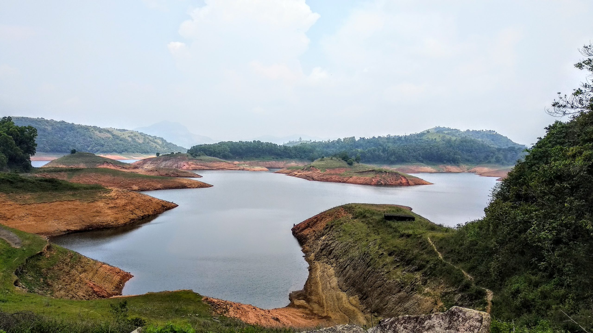
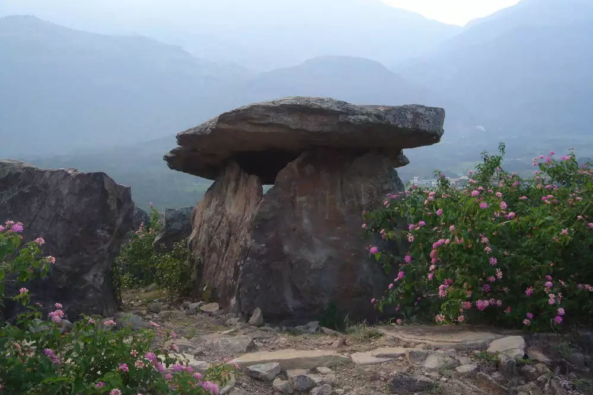
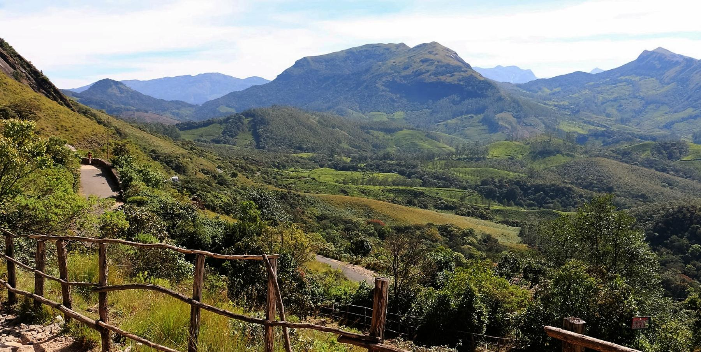

Idukki is one of the 14 districts in the Indian state of Kerala.It is the largest district in Kerala and lies amid the Cardamom Hills of Western Ghats in Kerala. Idukki district contains two municipal towns - Kattappana and Thodupuzha, and five taluks.Around 66% of Kerala's power needs come from various Hydroelectric Power Projects in Idukki district.Numerous cash crops and spices are cultivated throughout the district, making it The Spice Garden of Kerala.A significant area in the district is protected as reserved forests and wildlife sanctuaries.The Periyar River is a major river that originates and flows through Idukki. The Pamba River is another important river that originates from Idukki district.
TOP DESTINATIONS

Idukki Dam
Idukki Dam is an arch dam, which is a curved concrete dam that is built to withstand the pressure of water through the arch action.The dam is constructed across the Periyar River, forming a reservoir known as Idukki Reservoir. The reservoir has a vast catchment area, and it is surrounded by lush greenery.

Chinnar Wildlife Sanctuary
Chinnar Wildlife Sanctuary is a protected area located in the Idukki district and the state of Kerala, India.The sanctuary is known for its rich biodiversity, including a variety of flora and fauna. It is home to a wide range of plant species, including several rare and endangered ones.

Kalvari Mount
Kalvary Mount is situated near the town of Kattappana in the Idukki district of Kerala.The ascent to Kalvary Mount is marked by the Stations of the Cross, representing the events that occurred during the crucifixion of Jesus Christ.The location offers panoramic views of the surrounding landscape.

Kulamavu Dam
Kulamavu Dam is one of the major dams in the Indian state of Kerala.Like many dams in Kerala, Kulamavu Dam and its surroundings offer scenic beauty with the presence of hills, forests, and water bodies.Visitors can experience the grandeur of the dam and appreciate the engineering involved in hydroelectric projects.

Marayur Dolmens
Marayur Dolmens refer to a set of prehistoric dolmens (megalithic tombs) located in the Marayur region of Idukki district in the Indian state of Kerala. These dolmens are a fascinating archaeological and historical site that provides insights into the ancient human habitation of the area.

Eravikulam National Park
Eravikulam National Park is a wildlife sanctuary located in the Idukki district of Kerala, India. It is renowned for its stunning landscapes, rich biodiversity, and being home to the endangered Nilgiri Tahr.Anamudi, the highest peak in South India, is located within the park.